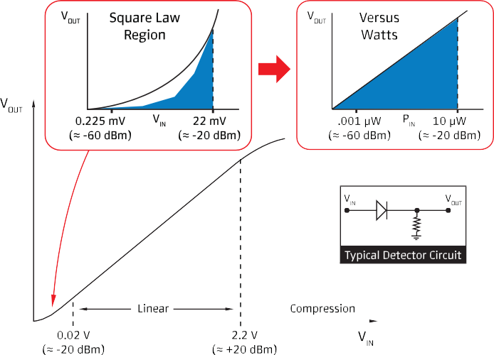
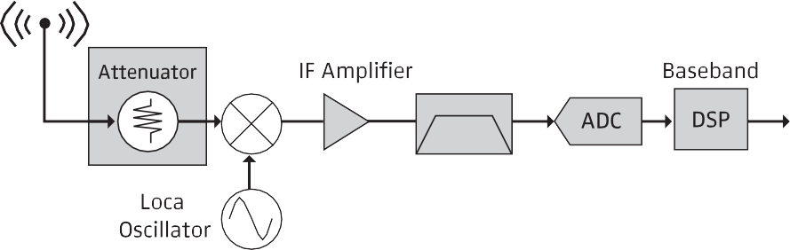
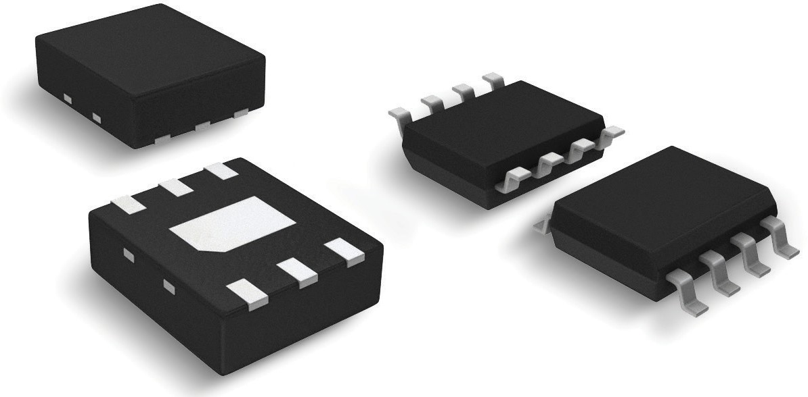
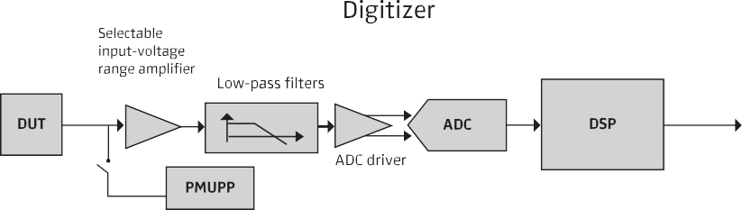
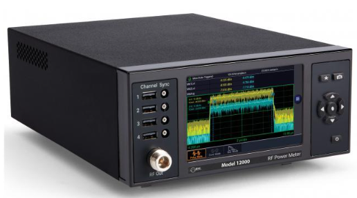
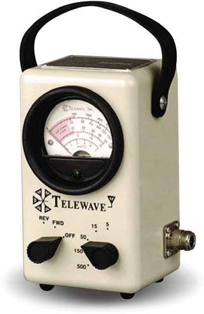

Chapter 2: Power Measurement Technologies
There are five broad families of RF amplitude measurement in common use today. Thermal sensors, diode detectors, receiver-based designs, monolithic amplitude ICs, and direct RF sampling. Each has strengths, each has trade-offs, and each owes a great deal to the engineers who came before. Let us take them one at a time.
2.1 Thermal RF Power Sensors
Thermal sensors measure what power actually does: they measure heat.
The idea is beautifully simple. Feed an RF signal into a precision termination. The signal dissipates as heat. Measure the temperature rise. Convert the temperature rise to power using a calibration curve. The measurement has no quarrel with modulation, no argument with signal shape, and no opinion about crest factor. Watts are watts.
Thermistors and bolometers. The earliest practical thermal sensors used thermistors, small resistive elements whose resistance changes sharply with temperature. The thermistor served both as the RF termination and as the temperature transducer, usually inside a Wheatstone bridge that applied a DC bias to hold the thermistor at a constant resistance. When RF power arrived, the bridge reduced the DC bias to keep the thermistor at the same temperature. The reduction in DC substitute power was numerically equal to the RF power. This technique is called DC substitution, and when done with a precision reference, it yields some of the most traceable RF power measurements available.
Thermocouple sensors. Thermocouples exploit the Seebeck effect: a junction of two dissimilar metals generates a voltage proportional to its temperature. A thermocouple sensor places a tiny thin-film thermocouple adjacent to a matched termination. When RF heats the termination, the thermocouple reports the temperature rise as a DC voltage. Thermocouples are more rugged than thermistors, offer better dynamic range on the low end, and do not require the active bridge circuitry. The classic HP 435 / 437 series of power meters used thermocouple technology and set the industry standard for accurate true-average measurement for decades.
The modern calorimeter. Calorimeters at the high-power end work on the same principle but measure the heat transferred to a flowing coolant, typically water or oil. These show up in manufacturing test of high-power transmitter tubes and in military radar test benches, where the signal would instantly vaporize a coaxial termination.
Strengths and limits. Thermal sensors are the reference standard for accuracy. They respond to true RMS power regardless of waveform. Their limitation is speed. Thermal time constants are measured in milliseconds to seconds, which means they average across any modulation faster than that. If your question is "what is the true average power of this signal over the last minute," a thermal sensor answers with authority. If your question is "what was the peak power during that 1 microsecond radar pulse," you need a different tool.
2.2 Detector (Diode) RF Power Sensors
Diode detector sensors are the workhorse of modern RF power measurement. They are fast, sensitive, and available from microwatts to watts. Almost every USB power sensor on the market today uses a diode detector at its core.
The principle is rectification. A low-barrier Schottky diode driven by an RF signal produces a DC voltage proportional to some function of the input. At low power levels (typically below about -20 dBm), the diode operates in its square law region, where the DC output is proportional to the input power. At higher levels, the diode transitions through a linear region and finally into a peak-detecting region where the DC output tracks the envelope of the RF.


Square law behavior. In the square law region (typically below about -20 dBm), a diode detector is truly a power sensor. The DC voltage is proportional to Vrms² / R, which is the same as average power. This means a square-law-operated diode delivers true-RMS measurement on any waveform, modulated or not, without any bandwidth penalty. It is a genuinely beautiful property of semiconductor physics, and it is the basis for a whole class of high-accuracy average power sensors.
Above the square law knee. Once the signal rises above the square law region, the diode response becomes more linear and then peak-detecting. The DC output now depends on the instantaneous envelope rather than the average power. For a CW signal this is easy to correct because the envelope is constant, but for modulated signals it is a problem. The peak-to-average ratio of the signal starts to leak into the measurement. The remedy is either to keep the signal within the square law region (usually with switchable attenuators), or to correct for it with calibration data, or to accept that the sensor is now a peak detector rather than an average detector and plan accordingly.
Multi-path diode designs. Modern average power sensors solve this elegantly with multiple parallel detection paths, each covering a different power range. The sensor firmware stitches the outputs together to deliver a true-RMS measurement across 80 dB or more of dynamic range, regardless of signal modulation. Berkeley Nucleonics uses a thermally stabilized two-path square-law scheme of exactly this kind in the Model 12100 series, with the practical benefit that there is no need to zero the sensor or reference it to a known source before use. More on that in Chapter 11.
Strengths and limits. Diode sensors are fast (nanosecond response times are achievable), sensitive (noise floors into the -70 dBm range), and compact. They can be made to deliver either average or peak measurements depending on the firmware and signal conditioning. Their limitation, at high signal levels, is the departure from square law. Well-designed modern sensors work around this with multiple paths, temperature stabilization, and careful calibration, but any engineer using a diode-based sensor should know which region they are operating in.
2.3 Receiver-Based Amplitude Measurement
Receiver-based amplitude measurement is what a spectrum analyzer does when you put it in zero-span or channel-power mode.
A receiver down-converts the signal of interest to an intermediate frequency (IF), filters it with a known bandwidth, digitizes the IF, and computes amplitude statistics from the samples. Because the receiver can select a frequency and a bandwidth precisely, it can measure the power inside a narrow slice of spectrum while rejecting everything else. This is irreplaceable when you need to measure a small signal in the presence of a large nearby carrier, and it is the natural tool for measuring spurs, harmonics, and out-of-band emissions.


Receiver-based measurement also has some real disadvantages for bulk power measurement. The displayed amplitude depends on the resolution bandwidth, the detector setting (peak, average, sample, quasi-peak), and the frequency calibration. Getting the right number takes careful setup. Measurement speed is limited by the sweep time. And absolute accuracy, while respectable, does not approach a dedicated power sensor.
As a rule, use a receiver when you care about what frequencies the power is at. Use a power sensor when you care about how much power is there.
2.4 Monolithic RF Amplitude Measurement
Some applications demand amplitude measurement inside the product rather than on the bench. For these, monolithic amplitude detection ICs exist. Parts like the Analog Devices AD8318, AD8362, and similar devices implement log-amp or RMS-responding detectors in a single package, often with 60 dB or more of dynamic range and response times in the microsecond to millisecond range.

These parts are how your phone actually controls its transmitter power. They are how a transmitter module knows to shut down when its output VSWR goes out of spec. They are not, generally, bench-accuracy devices. Their role is real-time, embedded, closed-loop amplitude control, and they do that role extraordinarily well.
2.5 Direct RF Sampling Amplitude Measurement
Direct RF sampling is the youngest of the technologies in wide use. A high-speed ADC digitizes the RF signal directly, and everything downstream is done in DSP. Modern gigasamples-per-second converters can capture signals to 6 GHz or higher without any analog down-conversion, and software computes amplitude, phase, modulation, demodulated data, and any other derived quantity you can imagine.
Direct sampling brings extraordinary flexibility.


One hardware configuration can measure average power, peak power, modulation quality, spectrum, and time-domain pulse profile, all from the same sample stream. It is also expensive, complex, and gluttonous about data storage. For bench-top bulk power measurement, a good diode sensor is still faster, cheaper, and easier to calibrate. For research labs and advanced test equipment, direct sampling is where the frontier lies.
2.6 What Is an RF Power Meter?
After all that discussion of sensor technology, we should answer a deceptively simple question. What is an RF power meter?
The shortest answer is that a power meter is a sensor plus everything needed to turn the sensor's output into a useful number.
In a traditional benchtop instrument, the "power meter" is a separate box with a display, a keypad, and a front-panel connector for the sensor. The sensor captures the RF energy; the meter supplies the sensor's bias, reads its output, applies calibration corrections, and displays a power reading in dBm or watts.
In a modern USB sensor, this division gets blurred. The sensor itself has enough microcontroller intelligence to handle its own calibration, corrections, triggering, and statistical analysis. The "meter" becomes a piece of software running on a PC. The Berkeley Nucleonics Model 12100 series is built around exactly this idea: each sensor is a complete, self-contained measurement instrument, and the host computer simply hosts the display.

In both cases, the function is the same. A power meter is the thing that turns a raw thermoelectric or diode-detector voltage into a number you can trust.

Pro tip. Never argue with a power reading until you know what the sensor is doing. An average sensor reporting 0 dBm on a pulsed radar signal is not lying. It is just answering a different question than you think you asked.
Check your understanding
Three quick questions on key power measurement technologies. Your answers save on this device.